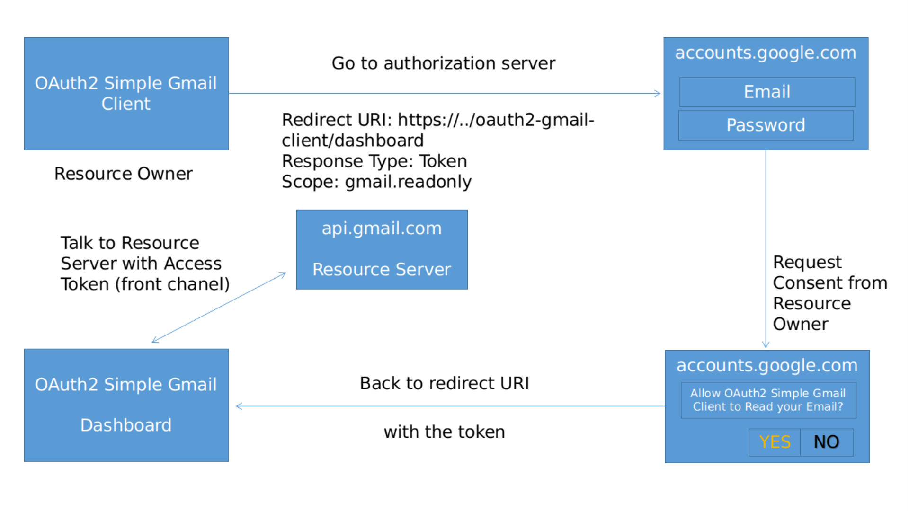

A simple attempt to demonstrate OAuth2 usage with Gmail API. This application is only capable of reading user's emails when user authorizes. It is a Single Page Application (aka SPA) that has been developed using Angular. Since it is a SPA, it uses OAuth2 Implicit Flow Grant Type. Furthermore, this project has been developed as an assignment of my MSc's Software Security Module. Hope someone finds this helpful someday, cheers...!
You can find the source here @ GitHub.
Answering it basically means how OAuth2 Implicit Flow Grant Type works. First of all let's look at the high level overview of OAuth2 Implicit Flow Grant Type.
When OAuth2 Simple Gmail client wants to access user's Gmail, first it requires user's permission to do that which means it requires user's email and the password of Gmail. But the user has no reason to trust us and give their login credentials. But other way around user trust Gmail. To be honest, we really don't want user login credentials as long as we have the permission to access his or her Gmail account. So all we need is user's permission to access the Gmail. That is what we are going to do. This is called Delegated Authorization.
First of all we send a HTTP request to Gmail Authorization server with few meta data. This includes three important things. Redirect URI, Response Type, Scope. In OAuth2 Implicit Flow Grant Type Response Type should be set to Token. This means if user consents to access his or her Gmail, we ask to send us an access token which we can later use to access the Resource Server. Because in order to deal with resource server we are going to need an access token.
Scope is also important. It defines what the client app really requires to access. The main difference between Authorization Code grant type and Implicit Flow Grant type is, in Implicit Flow grant type everything happens in the front chanel. So it could be less secured. But that is the approach that we have to take when we are dealing with Single Page Applications.